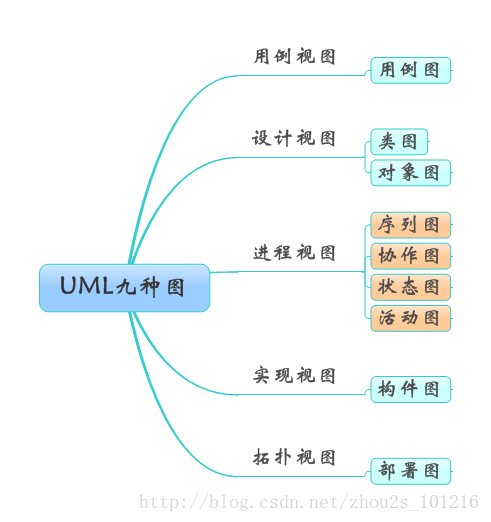

UML（Unified Modeling Language）是一种统一建模语言，为面向对象开发系统的产品进行说明、可视化、和编制文档的一种标准语言。下面将对UML的九种图+包图的基本概念进行介绍以及各个图的使用场景。
基本概念
如下图所示，UML图分为用例视图、设计视图、进程视图、实现视图和拓扑视图，又可以静动分为静态视图和动态视图。静态图分为：用例图，类图，对象图，包图，构件图，部署图。动态图分为：状态图，活动图，协作图，序列图。

用例图（UseCase Diagrams)
用例图主要回答了两个问题：1、是谁用软件。2、软件的功能。从用户的角度描述了系统的功能，并指出各个功能的执行者，强调用户的使用者，系统为执行者完成哪些功能。

类图（Class Diagrams)
用户根据用例图抽象成类，描述类的内部结构和类与类之间的关系，是一种静态结构图。 在UML类图中，常见的有以下几种关系: 泛化（Generalization）, 实现（Realization），关联（Association)，聚合（Aggregation），组合(Composition)，依赖(Dependency)。
各种关系的强弱顺序： 泛化 = 实现 > 组合 > 聚合 > 关联 > 依赖
泛化
【泛化关系】：是一种继承关系，表示一般与特殊的关系，它指定了子类如何继承父类的所有特征和行为。例如：老虎是动物的一种，即有老虎的特性也有动物的共性。

实现
【实现关系】：是一种类与接口的关系，表示类是接口所有特征和行为的实现。

关联
【关联关系】：是一种拥有的关系，它使一个类知道另一个类的属性和方法；如：老师与学生，丈夫与妻子关联可以是双向的，也可以是单向的。双向的关联可以有两个箭头或者没有箭头，单向的关联有一个箭头。
【代码体现】：成员变量

聚合
【聚合关系】：是整体与部分的关系，且部分可以离开整体而单独存在。如车和轮胎是整体和部分的关系，轮胎离开车仍然可以存在。
聚合关系是关联关系的一种，是强的关联关系；关联和聚合在语法上无法区分，必须考察具体的逻辑关系。
【代码体现】：成员变量

组合
【组合关系】：是整体与部分的关系，但部分不能离开整体而单独存在。如公司和部门是整体和部分的关系，没有公司就不存在部门。
组合关系是关联关系的一种，是比聚合关系还要强的关系，它要求普通的聚合关系中代表整体的对象负责代表部分的对象的生命周期。
【代码体现】：成员变量
【箭头及指向】：带实心菱形的实线，菱形指向整体

依赖
【依赖关系】：是一种使用的关系，即一个类的实现需要另一个类的协助，所以要尽量不使用双向的互相依赖.
【代码表现】：局部变量、方法的参数或者对静态方法的调用
【箭头及指向】：带箭头的虚线，指向被使用者

各种类图关系

对象图（Object Diagrams）
描述的是参与交互的各个对象在交互过程中某一时刻的状态。对象图可以被看作是类图在某一时刻的实例。

状态图（Statechart Diagrams）
是一种由状态、变迁、事件和活动组成的状态机，用来描述类的对象所有可能的状态以及时间发生时状态的转移条件。

活动图（Activity Diagrams
是状态图的一种特殊情况，这些状态大都处于活动状态。本质是一种流程图，它描述了活动到活动的控制流。
交互图强调的是对象到对象的控制流，而活动图则强调的是从活动到活动的控制流。
活动图是一种表述过程基理、业务过程以及工作流的技术。
它可以用来对业务过程、工作流建模，也可以对用例实现甚至是程序实现来建模。

带泳道的活动图
泳道表明每个活动是由哪些人或哪些部门负责完成。

带对象流的活动图
用活动图描述某个对象时，可以把涉及到的对象放置在活动图中，并用一个依赖将其连接到进行创建、修改和撤销的动作状态或者活动状态上，对象的这种使用方法就构成了对象流。对象流用带有箭头的虚线表示。

序列图-时序图（Sequence Diagrams）
交互图的一种，描述了对象之间消息发送的先后顺序，强调时间顺序。
序列图的主要用途是把用例表达的需求，转化为进一步、更加正式层次的精细表达。用例常常被细化为一个或者更多的序列图。同时序列图更有效地描述如何分配各个类的职责以及各类具有相应职责的原因。

消息用从一个对象的生命线到另一个对象生命线的箭头表示。箭头以时间顺序在图中从上到下排列。
序列图中涉及的元素：
生命线
生命线名称可带下划线。当使用下划线时，意味着序列图中的生命线代表一个类的特定实例。

同步消息
同步等待消息

异步消息
异步消息

注释

约束

组合
组合片段用来解决交互执行的条件及方式。它允许在序列图中直接表示逻辑组件，用于通过指定条件或子进程的应用区域，为任何生命线的任何部分定义特殊条件和子进程。常用的组合片段有：抉择、选项、循环、并行
协作图（Collaboration Diagrams)
交互图的一种，描述了收发消息的对象的组织关系，强调对象之间的合作关系。时序图按照时间顺序布图，而写作图按照空间结构布图

构件图（Component Diagrams）
构件图是用来表示系统中构件与构件之间，类或接口与构件之间的关系图。其中，构建图之间的关系表现为依赖关系，定义的类或接口与类之间的关系表现为依赖关系或实现关系。

部署图（Deployment Diagrams)
描述了系统运行时进行处理的结点以及在结点上活动的构件的配置。强调了物理设备以及之间的连接关系。
部署模型的目的：
描述一个具体应用的主要部署结构，通过对各种硬件，在硬件中的软件以及各种连接协议的显示，可以很好的描述系统是如何部署的；平衡系统运行时的计算资源分布；可以通过连接描述组织的硬件网络结构或者是嵌入式系统等具有多种硬件和软件相关的系统运行模型。

图的差异比较
- 序列图(时序图)VS协作图
序列图和协作图都是交互图。二者在语义上等价，可以相互转化。但是侧重点不同：序列图侧重时间顺序，协作图侧重对象间的关系。
共同点：时序图与协作图均显示了对象间的交互。
不同点：时序图强调交互的时间次序。
协作图强调交互的空间结构。 - 状态图VS活动图
状态图和活动图都是行为图。状态图侧重从行为的结果来描述，活动图侧重从行为的动作来描述。状态图描述了一个具体对象的可能状态以及他们之间的转换。在实际的项目中，活动图并不是必须的，需要满足以下条件：1、出现并行过程&行为；2、描述算法；3、跨越多个用例的活动图。 - 活动图VS交互图
二者都涉及到对象和他们之间传递的关系。区别在于交互图观察的是传送消息的对象，而活动图观察的是对象之间传递的消息。看似语义相同，但是他们是从不同的角度来观察整个系统的。
UML与软件工程
UML图是软件工程的组成部分，软件工程从宏观的角度保证了软件开发的各个过程的质量。而UML作为一种建模语言，更加有效的实现了软件工程的要求。
如下图，在软件的各个开发阶段需要的UML图。